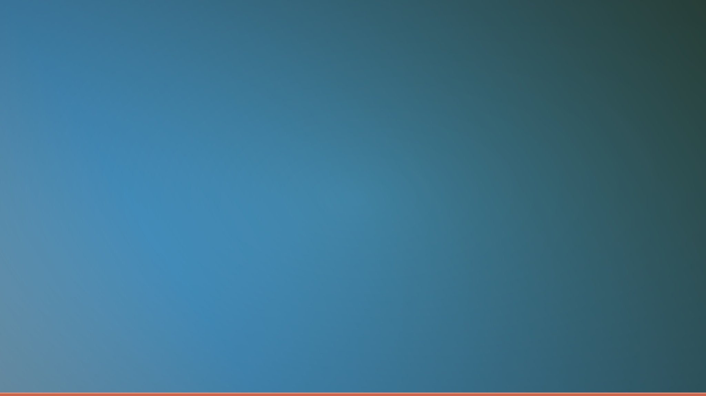

Кошка подходит к миске, достаёт корм лапой на пол и ест уже оттуда. Или вовсе отходит, съев только верхний слой. Многие хозяева списывают это на каприз — но за этим поведением стоит вполне реальный дискомфорт, называемый whisker fatigue. Поменять одну деталь посуды — и проблема исчезает.
Вибриссы — это не просто длинные волоски. Это высокочувствительные сенсорные органы, уходящие корнями глубоко в кожу, где их окружают нервные окончания и кровеносные сосуды. Каждая вибрисса передаёт информацию о малейших изменениях воздушных потоков, прикосновениях, пространственных ориентирах.
Когда кошка опускает голову в глубокую узкую миску, вибриссы постоянно касаются стенок. Каждый контакт — нервный импульс. За время одного кормления это сотни сигналов. Результат — раздражение, стресс и нежелание подходить к миске снова.
Термин «whisker fatigue» (усталость вибрисс) ввели американские ветеринарные специалисты в середине 2010-х. Он не является официальным медицинским диагнозом, но описывает реальное явление, которое ветеринары наблюдают в практике. Чувствительность вибрисс индивидуальна: одни кошки не реагируют на глубокую миску, другие страдают заметно.
Несколько признаков, которые указывают именно на дискомфорт от миски, а не на потерю аппетита:
Важно исключить другие причины снижения аппетита (смена корма, стресс, нежелание есть рядом с другим животным). Если кошка не ест совсем несколько дней — это повод для планового осмотра, а не только смены миски.
🐾 Здоровье питомца под контролем
AI-ветеринар, дневник здоровья и персональные советы для вашего питомца — установите AnimaLife бесплатно.
Плоская или широкая миска — та, в которой вибриссы не касаются стенок. Корм лежит на открытой поверхности, кошка опускает голову без контакта усов с бортиком. Нервная система не перегружается, кормление проходит спокойно.
Оптимальные параметры «правильной» миски:
Глубина — главное, но материал тоже важен:
Помимо выбора правильной миски, есть несколько условий комфортного кормления:
🐾 Первая помощь — всегда под рукой
AnimaLife подскажет, что делать в тревожной ситуации с питомцем ещё до визита к врачу. Откройте в один тап.
🐾 Понравился разбор?
Подпишитесь на канал — каждый день разбираем по одному тревожному симптому у кошек и собак: что в пределах нормы, а когда пора к врачу. Подпишитесь, чтобы не пропустить разбор, который может спасти здоровье вашего питомца.
Кошка, которая ест с пола, скорее всего, просто пытается избежать контакта усов со стенками миски. Это не каприз и не избирательность — это физиология. Плоская широкая миска из нержавейки или керамики стоит несколько сотен рублей и полностью решает проблему у большинства кошек. О том, почему кошки вообще мало пьют воды и что с этим делать, читайте в статье про питьевые привычки кошек.